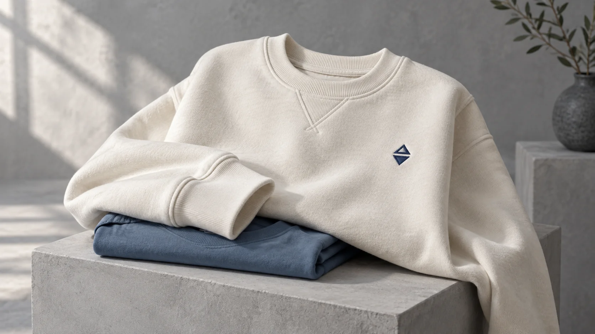
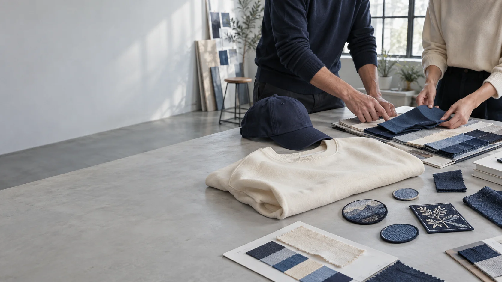
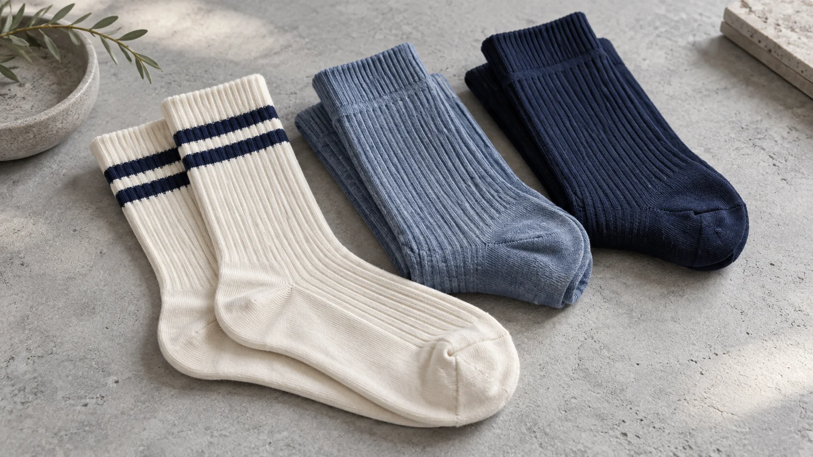
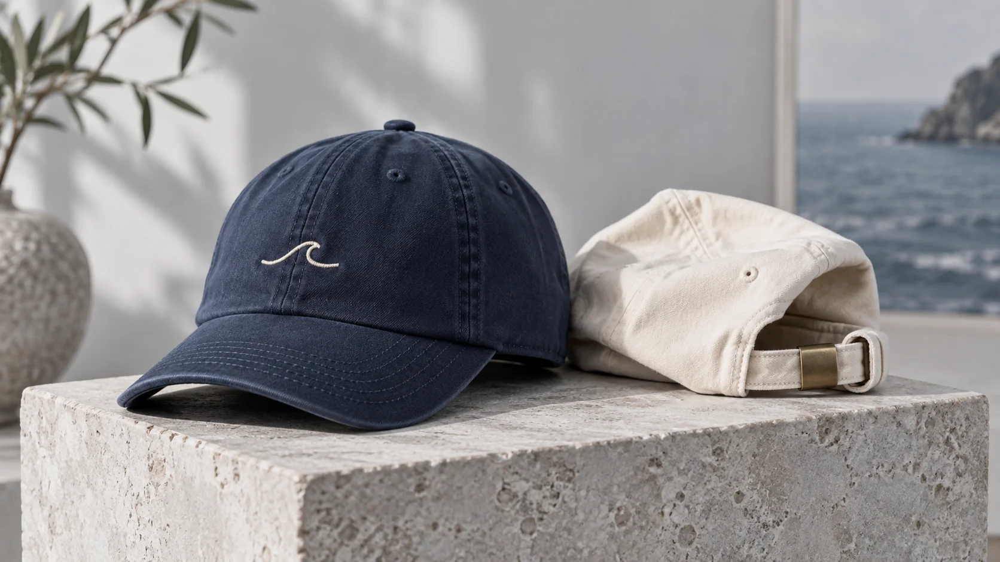
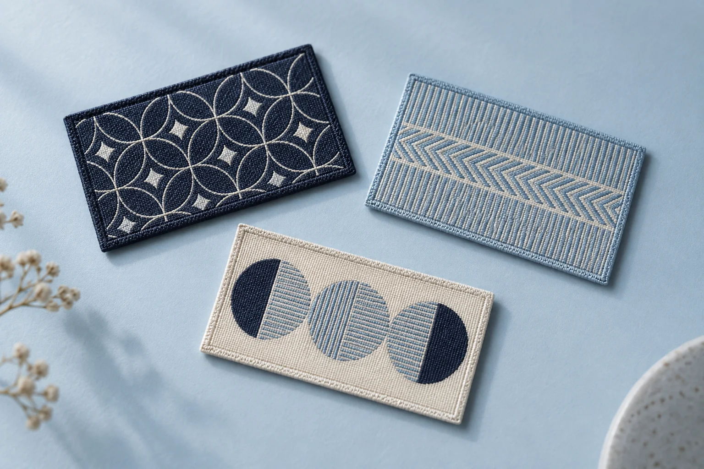
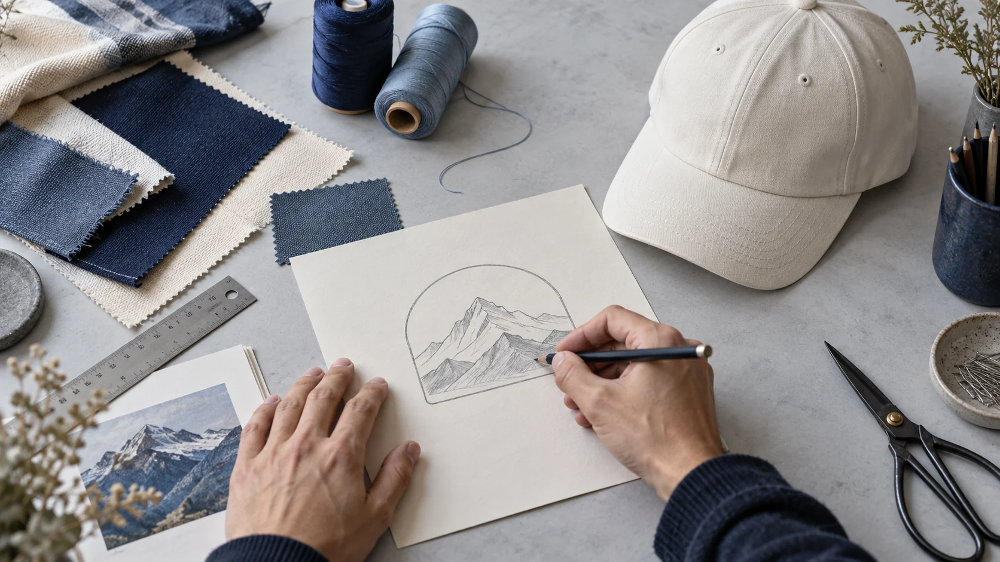
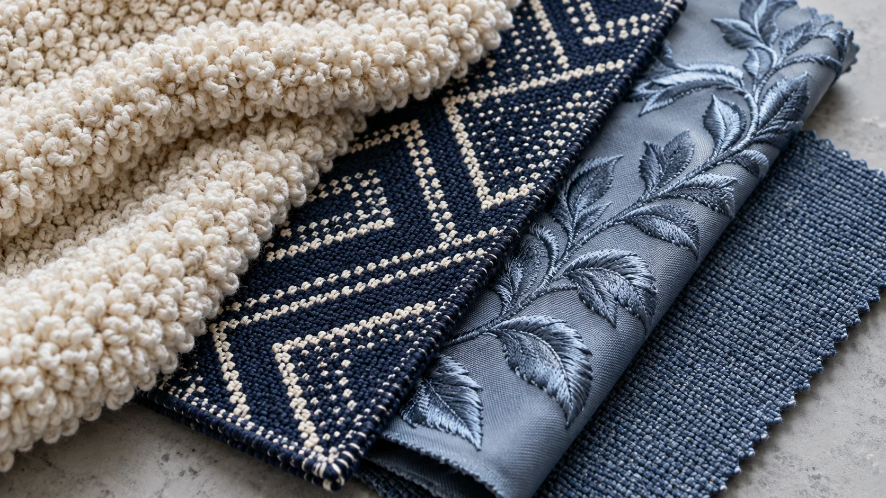
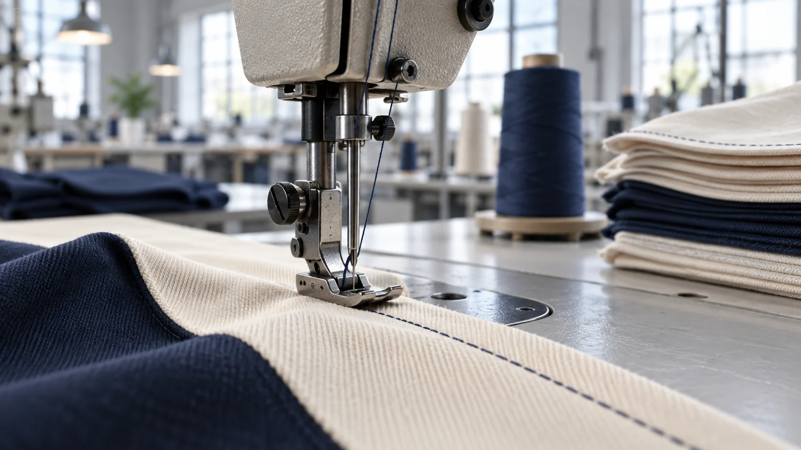
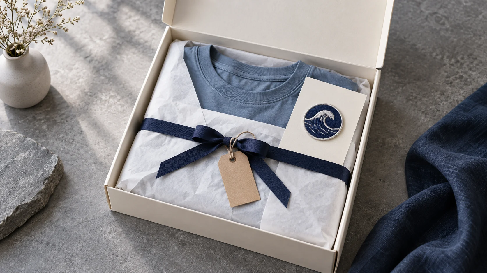

APPAREL
Clothing
Discuss garment shape, fabric, size range and decoration.
CUSTOM PRODUCT MANUFACTURING
Turn a product idea into a workable specification. We help coordinate sourcing, sampling, production follow-up, quality checks and shipping arrangements.

PRODUCT CATEGORIES
Explore core categories and patch constructions. The right material and finish depend on the artwork, intended use and specification.

Discuss garment shape, fabric, size range and decoration.

Review yarn color, size range, knit pattern and packaging.

Clarify profile, panels, closure and decoration placement.
Compare shape, construction, border and attachment options.

Thread fills create visible texture; artwork size affects detail.

A flatter woven surface can suit fine lines and smaller lettering.

A looped pile brings a plush surface and a raised look.

A molded surface creates raised shapes and defined color areas.
Bring product, quantity and delivery details into one working plan.
Compare materials, sizing and decoration against requirements.
Plan production follow-up, quality checks and shipping arrangements.
A WORKABLE PRODUCTION PLAN
Confirm requirements in sequence so choices stay connected as the project moves forward.

Share the item, intended use, estimated quantity, target timing and delivery destination. Add artwork or references when available.

Discuss construction, colors, decoration, sizing and packaging in relation to the product.
Review the sample against the specification. Record changes and confirm the approved version before production begins.

Follow the agreed requirements and arrange checks appropriate to the item and project plan.
Illustrative production imagery.
Confirm packaging, destination, timing and delivery instructions as part of the project details.
PREPARE FOR A USEFUL CONVERSATION
Describe what you want to make and how it will be used.
Share an estimated quantity, target date and timing flexibility.
Send artwork, photos, a sketch or notes on color and placement.
Note labeling, individual packing or shipping requirements you know.
DESIGN AND SPECIFICATION
Bring artwork, dimensions, material, colors and placement together. This gives the sample review a shared reference and reduces ambiguity.
See how the steps connectSAMPLE REVIEW
Review size, fit or shape, color, decoration and finishing details. Record adjustments and confirm the approved sample before moving ahead.
Read about project supportPRODUCTION COORDINATION
Record the specification, quantity, target timing, packing details and destination together to support production follow-up and shipping.
Talk through your projectMAKE THE BRIEF EASIER TO REVIEW
Check lettering, thin lines and spacing at finished size.
List colors, sizes and decoration positions together.
Share labels, individual packaging and destination details early.
ILLUSTRATIVE PRODUCT CONCEPTS
These concepts are discussion prompts only. They do not represent client projects, orders or production results.
Align garment options, size mix and one decoration direction.
Compare outline, backing and attachment details.
Include labels and packing format in the project brief.
PRODUCTS WE CAN DISCUSS
A NOTE ON ON-DEMAND
“On-demand manufacturing” can describe different arrangements. For a custom order, confirm quantity, specification, production plan and timing before making a commitment. Details depend on the product and requirements.
Ask about your requirementsCOMMON QUESTIONS
Start with the product, intended use, estimated quantity, target date, destination and artwork or visual references. We can help identify remaining details.
Sample review can be part of the project process. The route and timing depend on the product and agreed specification.
Compare artwork scale, surface and intended use. Embroidered, woven, chenille and PVC create different looks and should be reviewed with their matching product references.
No. A sketch, photo or written description can begin the conversation. Final artwork and production details should be confirmed before sampling or production.
Shipping coordination is part of project support. Share the destination and any timing or packaging instructions for the plan.
READY TO DISCUSS A PRODUCT?
Tell us what you want to make, how many you are considering and when you need it.